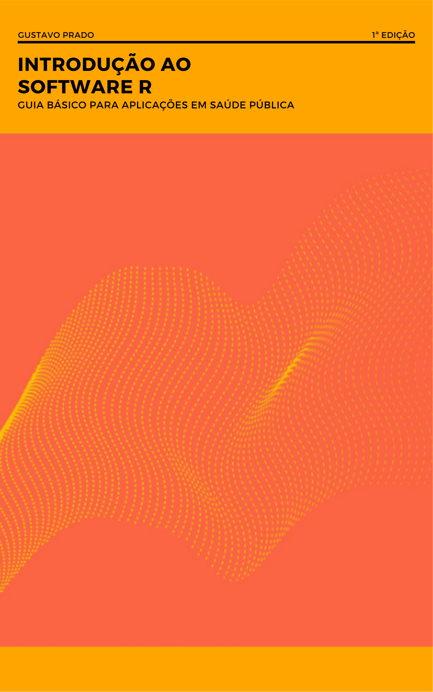

Introdução ao Software R
Guia básico para aplicações em Saúde Pública
Gustavo Prado ![]()
Prefácio

Sobre este livro
Este livro foi concebido como material de apoio à disciplina Introdução ao R, oferecida pelo Departamento de Epidemiologia da Faculdade de Saúde Pública da Universidade de São Paulo a estudantes de graduação e de pós-graduação. A ementa da disciplina combina três frentes que costumam ser ensinadas separadamente: os fundamentos da linguagem R, a preparação e a exploração de dados e a aplicação de procedimentos estatísticos básicos a problemas de saúde. O livro procura articular essas frentes em uma sequência.
A proposta é que o estudante termine a leitura capaz de conduzir, com autonomia, uma análise completa de dados em saúde: formular uma pergunta, obter e importar os dados, organizá-los, descrevê-los com tabelas e gráficos, aplicar os testes estatísticos adequados à pergunta e ao delineamento e comunicar os resultados em um relatório reprodutível. O livro não pretende substituir textos de estatística ou de epidemiologia; os conceitos dessas áreas são retomados apenas na medida necessária para que o uso do R seja feito com critério.
A quem se destina
O público principal é formado por estudantes e profissionais da Saúde Pública sem experiência prévia em programação. Por isso, nenhum conceito computacional é pressuposto: termos como objeto, função, argumento, vetor ou pacote são definidos antes de serem utilizados. Espera-se, por outro lado, familiaridade com noções elementares de estatística descritiva e com os principais indicadores de saúde, que são revisados de forma breve quando necessário.
Como a disciplina reúne estudantes de graduação e de pós-graduação, os exercícios de cada capítulo estão organizados em três níveis. Os exercícios de fixação retomam diretamente os exemplos do texto; os de aplicação pedem que as mesmas operações sejam feitas em outro conjunto de dados ou com outra pergunta; e os desafios exigem combinar conteúdos de diferentes capítulos ou justificar escolhas analíticas, sendo especialmente indicados para estudantes de pós-graduação.
Como o livro está organizado
O livro está dividido em cinco partes. A primeira apresenta o ambiente de trabalho, os elementos básicos da linguagem e a produção de documentos reprodutíveis com Quarto. A segunda trata da preparação de dados: importação, transformação, cálculo de indicadores, organização e combinação de tabelas e o tratamento de textos, categorias, datas e valores ausentes. A terceira é dedicada à visualização, à estatística descritiva e a um protocolo de análise exploratória. A quarta introduz os procedimentos inferenciais previstos na ementa da disciplina: comparação de médias, correlação e regressão linear simples, tabelas de contingência e medidas de associação. A quinta reúne noções de programação e um estudo integrador que serve de modelo para o trabalho final. Os apêndices tratam da instalação do software, dos sistemas de informação em saúde, das bases de dados utilizadas, de erros frequentes e de um glossário.
Convenções
O código em R aparece em blocos destacados, que podem ser copiados com um clique; nomes de funções são grafados com parênteses, como mean(), e nomes de pacotes em fonte monoespaçada, como dplyr. Quando for necessário indicar explicitamente o pacote de origem de uma função, será usada a notação pacote::funcao(). O livro adota o estilo de código do tidyverse e o operador pipe nativo do R (|>).
Ao longo do texto, caixas destacadas cumprem funções específicas. As caixas de objetivos abrem cada capítulo; as caixas “Saúde Pública em foco” discutem a interpretação epidemiológica de um resultado; as caixas de atenção apontam erros frequentes; e as caixas “Para aprofundar” indicam conteúdos que ultrapassam o escopo da disciplina, mas que podem interessar a quem pretende seguir adiante.
Dados utilizados
Os exemplos usam, sempre que possível, dados reais e públicos. A base principal reúne os nascidos vivos de mães residentes em Rondônia em 2019, registrados no Sistema de Informações sobre Nascidos Vivos (SINASC). Ela acompanha o leitor da importação ao estudo integrador, o que permite concentrar a atenção nos novos conteúdos de cada capítulo. A ela se juntam as estimativas populacionais dos municípios de Rondônia, disponibilizadas pelo DATASUS, e a série diária de casos e óbitos de COVID-19 nos estados da região Norte. Nos capítulos de inferência, são usadas também bases de estudos médicos publicados, reunidas no pacote medicaldata, como um ensaio clínico e um estudo caso-controle. Os exemplos com dados fictícios, criados apenas para ilustrar o funcionamento de uma função, são sempre identificados como tais.
Todas as bases estão na pasta dados/ do projeto, e a procedência, o processamento e o dicionário de cada uma estão descritos no Apêndice C — Bases de dados utilizadas no livro. Para trabalhar com outros estados, outros anos ou outros sistemas, como o Sistema de Informações sobre Mortalidade (SIM) e o Sistema de Informação de Agravos de Notificação (SINAN), o livro mostra como obter os microdados diretamente no R com os pacotes microdatasus e healthbR.
Software
Os exemplos usam o R (versão 4.1 ou superior, necessária para o pipe nativo), o RStudio e o Quarto, e o livro foi produzido com o R 4.5. As instruções de instalação e o comando para instalar todos os pacotes utilizados estão no Apêndice A — Instalação e configuração do ambiente.
Referências que orientam o livro
A seleção e a organização dos conteúdos se apoiam em três obras principais e em uma complementar, todas de acesso aberto: R para Ciência de Dados (WICKHAM; ÇETINKAYA-RUNDEL; GROLEMUND, 2023), o Manual de R para Epidemiologistas (BATRA et al., 2021), Introdução à Linguagem R: seus fundamentos e sua prática (FARIA, 2024) e, como referência complementar para os conteúdos estatísticos, Practical Statistics in Medicine with R (BOUGIOUKAS, 2025). Essas obras foram usadas como fontes de consulta; o texto, os exemplos e os exercícios deste livro são originais. Ao final de cada capítulo, uma seção “Para saber mais” indica os capítulos e as seções dessas obras que tratam dos mesmos conteúdos.
Licença
Este livro é distribuído sob a licença Creative Commons Atribuição-NãoComercial-CompartilhaIgual 4.0 Internacional (CC BY-NC-SA 4.0), a mesma adotada pelo Manual de R para Epidemiologistas. Isso significa que o material pode ser copiado, redistribuído e adaptado para fins não comerciais, desde que a autoria seja citada e que as adaptações sejam distribuídas sob a mesma licença.